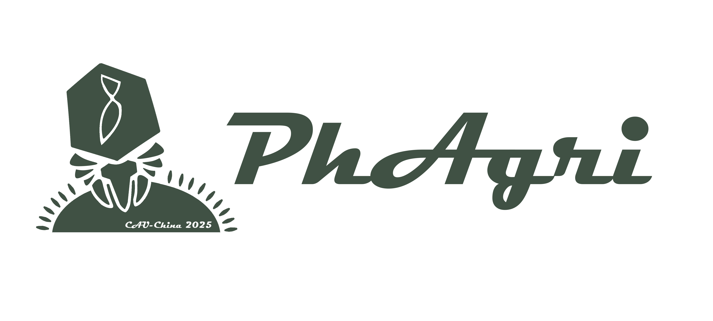
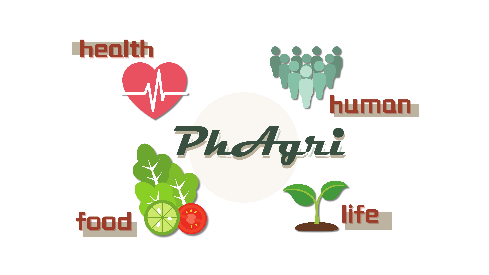

The application of traditional chemical pesticides is damaging soil environments... leading to the accumulation of chemical elements and widespread pesticide abuse.


Studies have found that bacterial diseases can devastate tomato production.
The application of traditional chemical pesticides is damaging soil environments... leading to the accumulation of chemical elements and widespread pesticide abuse.

As students at an agricultural university, we recognize that food security is vital to human survival. We aim to develop a sustainable biological pesticide that can precisely target
and eliminate pathogenic bacteria.
Although existing phage cocktail therapies can kill pathogens to some extent,
they still face issues such as interactions between different phages
that reduce their antibacterial efficacy.
We could engineer phage particles to
efficiently and controllably eliminate pathogenic bacteria?
Phage + Agriculture = PhAgri

PhAgri leverages the high specificity of bacteriophages,
turning them into an efficient delivery system.
This technology can not only be applied in agriculture but also serve as a versatile carrier platform.


Phage + animal = Phanimal
Phage + environment = Phagenvironment
With slight modifications to existing systems, controllable phage particles can be
used to target and eradicate pathogens in various common environments.
This offers a new production paradigm and provides a "phage+" delivery platform for society.
